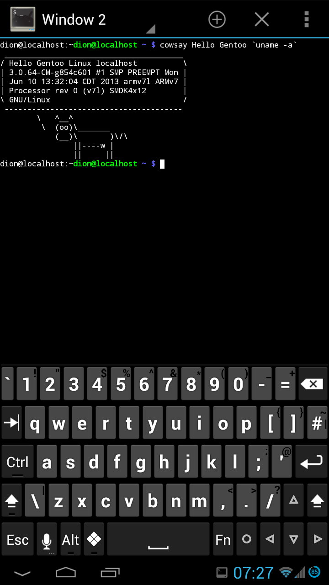
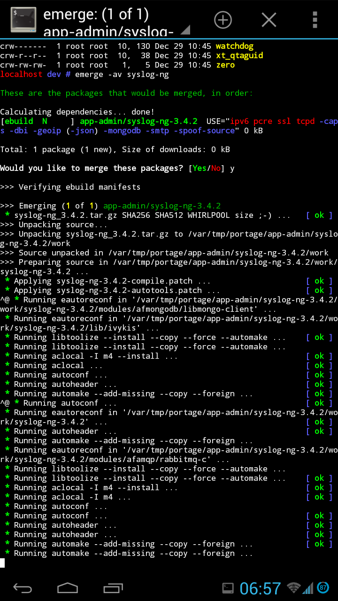

Note: recently edited 8th Nov 2014
Installing Gentoo in a chroot alongside Android is easy, so if you already use Gentoo and have an Android phone, there's really no reason why you shouldn't do it. With a ginormous phablet like the Samsung Galaxy Note 2 and a bluetooth keyboard, you can get a super-mobile full Linux workstation everywhere you go.
Before we begin, let's see the pretty pictures. Here's Larry saying hello :) (Installing a talking cow should be the top priority once the base system is up and running)

... and of course a shot of emerging stuff ...

... and finally we're running Enlightenment 17 with the Webkit-based Midori browser with X, accessed via (Tight)VNC ...
{kind=link}
Installing Gentoo on Android
Prerequisites first: you'll need a rooted device. You'll also need a terminal with busybox. I recommend Android Terminal Emulator and busybox by stericson. I would also recommend installing Hacker's Keyboard, which gives you a full keylayout.
Installing is rather straightforward: modern Android phones usually run on ARMv7 so just follow the appropriate handbook. If you are installing it onto your internal storage (not on an external SD), you can skip to chapter 5 :)
You will need to be root to install, so su - in your terminal emulator
of choice. Similarly, remount Android into read-write so that you can
create the necessary files for Gentoo with mount -o remount,rw /.
Finally, remember to install in /data/gentoo instead of /mnt/gentoo
so to not conflict with Android's mounting preferences.
Since we're only installing a chroot and not booting alongside android, you can safely skip configuring the kernel, configuring fstab, configuring networking, and setting up the bootloader.
When mounting, you will need to do so as root user, and use the busybox
implementation for --rbind support, as so:
$ su -
[ ... superuser access granted ... ]
$ cd /
$ mount -t proc proc /data/gentoo/proc
$ busybox mount --rbind /dev /data/gentoo/dev
$ busybox mount --rbind /sys /data/gentoo/sys
$ chroot /data/gentoo /bin/bash
[ ... now in the chroot ... ]
$ source /etc/profile
This is assuming you've put Gentoo in /data/gentoo
Android quirks
There doesn't seem to be a /dev/fd on Android, so let's fix that:
[ ... in Gentoo chroot ... ]
$ cd /dev
$ ln -s /proc/self/fd`
Portage won't be able to download files as it doesn't download as root, but instead as another user by default. No problem:
[ ... in /etc/portage/make.conf ... ]
FEATURES="-userfetch"`
Sometimes I've noticed that on bad reboots the /etc/resolv.conf can
get reset. This will cause host resolving issues. Resolving is as easy
as:
[ ... in /etc/resolv.conf ... ]
nameserver 8.8.4.4
nameserver 8.8.8.8`
It will be a good idea to set your main user to the same UID as the
Android normal user. Also, running id -a in android will show you that
your user is part of various reserved Android groups. To fix issues such
as your Gentoo user's (in)ability to go online or use bluetooth, just
create these groups in your Gentoo install with matching GIDs, and add
your user to these groups. Here's a list of Android UIDS and
GIDS.
For example, I needed to add my Gentoo user to groups with GIDs 3003 and
3004 before it could successfully go online.
If you want an X server, VNC will do the trick. I recommend android-vnc-viewer 24-bit colour seems to work, and perhaps change the input method to touchpad rather than touchscreen so it's relatively usable.
Finally, with no fan and big heatsink on a mobile phone, you might find
yourself running hot. So even though monsters like the Galaxy Note 2
have 4 cores, I recommend sticking it to MAKEOPT="-j2"